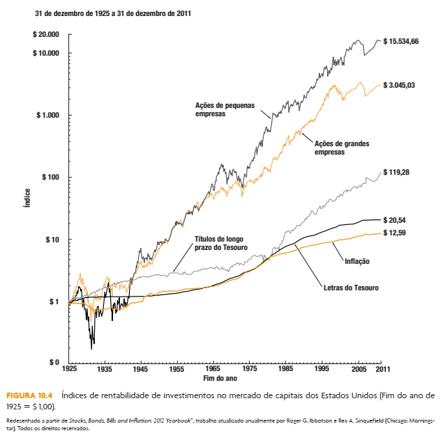
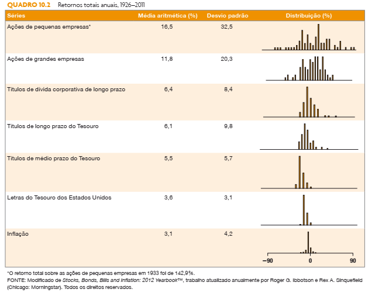

6 CAPM e o Custo de Capital Próprio (Ke)
6.1 Relembrando da Unidade I
Usualmente calculamos o preço de avaliação de uma ação da seguinte forma:
\(P_0=\sum{\frac{D_n(1+g)^n}{(1+r)^n}}+\frac{\frac{DIV_{N+1}}{r-g}}{(1+r)^N}\)
Observe que o último componente é o modelo de Gordon, que pressupoem um crescimento constante na perpetuidade:
\[P_t = \frac{DIV_{t+1}}{(r-g)}\]
e isolando o r, temos:
\[r-g = \frac{DIV_{t+1}}{P_t} \;\; \rightarrow \;\; \boxed{r = \frac{DIV_{t+1}}{P_t} + g}\]
Observe que o retorno (\(r\)) é o retorno sobre dividendos (\(Div/P_0\)) mais o retorno em ganhos de capital (\(g\)):
| \(r\) | \(=\) | \(\frac{DIV_{t+1}}{P_t}\) | + | \(g\) |
| retorno esperado | retorno sobre dividendos | retorno em ganhos de capital |
Mas o que é ganho de capital? É simplesmente o que o investidor ganha com a valorização da ação, ou seja a diferença entre o preço inicial e o preço final (\(P_t - P_{t+1}\)), portanto, para calcularmos o retorno histórico de cada ação temos que considerar o ganho em dividendos e o ganho em capital da seguinte forma:
\[\boxed{r = \frac{DIV}{P_t} + \frac{(P_t-P_{t-1})}{P_t}}\]
ou
| \(r\) | \(=\) | \(\frac{DIV}{P_t}\) | + | \(\frac{(P_t-P_{t-1})}{P_t}\) |
| retorno esperado | retorno sobre dividendos | retorno em ganhos de capital |
6.2 Cálculo do retorno de uma ação
Exemplo:
Suponha que você fez um investimento no início do ano (\(t\)) adquirindo ações de uma empresa a um preço de R$20,00 por ação, no decorrer do ano você recebeu um total de R$1,00 em dividendos por cada ação, e no final do ano, inicio do ano seguinte (\(t+1\)), você vendeu a ação por R$22,00. Calcule o retorno obtido no período com esse investimento.
Dados da questão:
\(P_t = 20,00\)
\(P_{t+1} = 22,00\)
\(DIV = 1,00\)
Logo:
\[r = \frac{DIV}{P_t} + \frac{(P_t-P_{t-1})}{P_t} \;\; \rightarrow \;\; \boxed{r=5\%+10\%=15\%}\]
6.3 Lições da História do Mercado de Capitais
Uma famosa série de estudos tratando das taxas de retorno de ações, títulos de dívida e letras do Tesouro dos Estados Unidos é encontrada no Ibbotson SBBI 2012 Classic Yearbook. O livro do Ross apresenta taxas de retorno históricas, ano a ano, para os cinco importantes tipos de instrumentos financeiros dos Estados Unidos, resumidos a seguir:
- Ações de grandes empresas: Carteira de ações que se baseia no índice Standard & Poor’s Composite (S&P 500). No momento, o S&P Composite inclui 500 das maiores ações em termos de valor de mercado dos Estados Unidos.
- Ações de pequenas empresas: Carteira de ações correspondente ao quinto inferior das ações negociadas na Bolsa de Valores de Nova York, na qu al as ações são classificadas pelo valor de mercado; isto é, o preço da ação multiplicado pelo número de ações em circulação.
- Títulos de dívida corporativa de longo prazo: Carteira de títulos de dívida de alta qualidade de crédito com 20 anos até o vencimento.
- Títulos de longo prazo do Tesouro: Carteira baseada nos títulos de dívida emitidos pelo governo dos Estados Unidos com 20 anos até o vencimento.
- Letras do Tesouro: Car teira que se baseia nas letras do Tesouro dos Estados Unidos com vencimento de um mês.
Nenhum dos retornos é ajustado para tributos ou custos de tran sação. Além dos retornos ano a ano desses instrumentos financeiros, a variação ano a ano no índice de preços ao consumidor (CPI – Consumer Price Index) também é mostrada. Essa é uma medida básica da inflação norte-americana. Podemos calcular os retornos reais ano a ano considerando a inflação anual.
Antes de examinar os diferentes retornos das carteiras, apresentaremos graficamente os retornos e riscos no mercado de capitais dos Estados Unidos no período de 86 anos de 1926 a 2011.
A Figura 10.4 mostra o crescimento de $ 1 investido no início de 1926. Note que o eixo vertical é logarítmico, de modo que distâncias iguais medem a mesma variação percentual.
A figura mostra que, se $1 fosse investido em ações de grandes empresas e todos os dividendos fossem reinvestidos, esse $ 1 teria aumentado para $ 3.045,22 no fim de 2011. O maior crescimento foi na carteira de ações de pequenas empresas. Se $ 1 fosse investido em ações de pequenas empresas em 1926, o investimento teria crescido para $ 15.532,07.

Contudo, quando se examina cuidadosamente a Figura 10.4, pode-se ver uma grande variabilidade nos retornos das ações de pequenas empresas, especialmente na porção inicial do período. Um dólar em títulos de longo prazo do Tesouro dos Estados Unidos era bastante estável em comparação com um dólar em ações. As Figuras de 10.5 a 10.8 esboçam cada retorno percentual ano a ano como uma barra vertical traçada a partir do eixo horizontal para ações de grandes empresas, ações de pequenas empresas, títulos de longo prazo e letras do Tesouro dos Estados Unidos e inflação, respectivamente.
A Figura 10.4 apresenta o crescimento do investimento de um dólar no mercado de ações norte-americano de 1926 até 2011. Em outras palavras, ela mostra qual teria sido o valor do investimento se o dólar tivesse sido deixado no mercado de ações e se, em cada ano, os dividendos do ano anterior tivessem sido reinvestidos em mais ações.
6.3.1 Prêmio pelo risco
O Quadro 10.2 mostra o retorno médio de ações, o retorno de títulos de dívida, o retorno das letras do Tesouro dos Estados Unidos e a taxa de inflação do período de 1926 até 2011 nos Estados Unidos.

Partindo disso, podemos derivar os retornos excedentes médios. O retorno excedente médio das ações de grandes empresas relativo às letras do Tesouro pelo período inteiro foi de 8,2% (11,8% - 3,6%). O retorno excedente médio de ações é chamado de prêmio histórico pelo risco do capital próprio, porque é o retorno adicional por assumir o risco.
Portanto, se considerarmos que o retorno relativo às letras do Tesouro é livre de risco (risk-free rate), podemos dizer que o retorno de qualquer ativo mais arriscado é o retorno livre de risco (\(R_f\)) mais um prêmio pelo risco. Ou seja, o retorno médio do mercado (\(R_m\)) pode ser escrito como:
\(R_m = Rf + Prêmio Pelo Risco\)
Mas o que é o prêmio pelo risco? É simplesmente a diferença entre o retorno médio do mercado (\(Rm\)) e o retorno do ativo livre de risco (\(Rf\))
\(Prêmio pelo Risco = Rm - Rf\)
Logo, o retorno esperado por investir em ações pode ser reescrito da seguinte forma:
\(R_m = Rf + (Rm-Rf)\)
6.4 Prêmio de Risco de Ações Individuais
- Qual o retorno esperado de uma ação que tem duas (\(2\)) vezes o prêmio pelo risco de investir em ações?
\(Ra = Rf + 2(Rm - Rf)\)
- Qual o retorno esperado de uma ação que tem a metade (\(1/2=0,5\)) do prêmio pelo risco de investir em ações?
\(Rb = Rf + 0,5(Rm - Rf)\)
- Qual o retorno esperado de uma ação que tem o mesmo prêmio pelo risco de investir em ações?
\(Rc = Rf + 1(Rm - Rf)\)
- Qual o retorno esperado de uma ação que tem um prêmio pelo risco 50% maior (\(1+0,5=1,5\)) do que o prêmio de investir em ações?
\(Rd = Rf + 1(Rm - Rf)\)
6.5 Coeficiente Beta
Ação um pouco menos arriscada (Exemplo: \(0,5(Rm-Rf)\), \(\beta = 0,5\))
Ação com risco médio (Exemplo: \(1,0(Rm-Rf)\), \(\beta = 1,0\))
Ação um pouco mais arriscada (Exemplo: \(1,5(Rm-Rf)\), \(\beta = 1,5\))
Ação um pouco muito arriscada (Exemplo: \(2,0(Rm-Rf)\), \(\beta = 2\))
6.6 Custo de Capital Própio de acordo com o CAPM
Modelo de precificação de ativos financeiros (CAPM)
Retorno esperado de uma ação i:
\(R_i = Rf + \beta(Rm - Rf)\)
De forma análoga, o custo de capital próprio dessa empresa pode ser escrito da seguinte forma:
\(K_e = Rf + \beta(Rm - Rf)\)